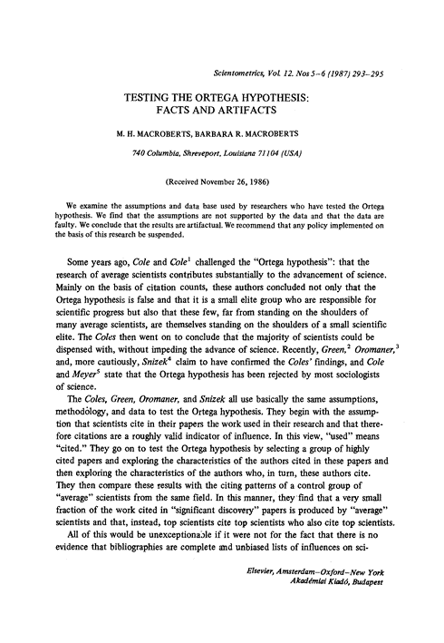

|
Recognized as:
Universidad de Granada (535-02-892)
UNWTO Library (880-53-068)
Welcome!
To use the personalized features of this site, please log in or register.
If you have forgotten your username or password, we can help.
|
|
|
|
Authors
M. H. Macroberts1, Barbara R. Macroberts1
1740 Columbia 71104 Shreveport Louisiana USA 740 Columbia 71104 Shreveport Louisiana USA
Abstract
Abstract We examine the assumptions and data base used by researchers who have tested the Ortega hypothesis. We find that the assumptions are not supported by the data and that the data are faulty. We conclude that the results are artifactual. We recommend that any policy implemented on the basis of this research be suspended.
Fulltext Preview (Small, Large)

|
|
|
|